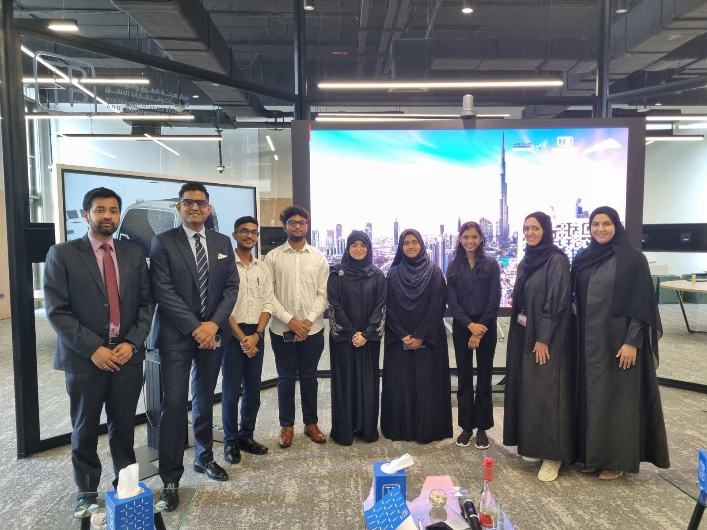
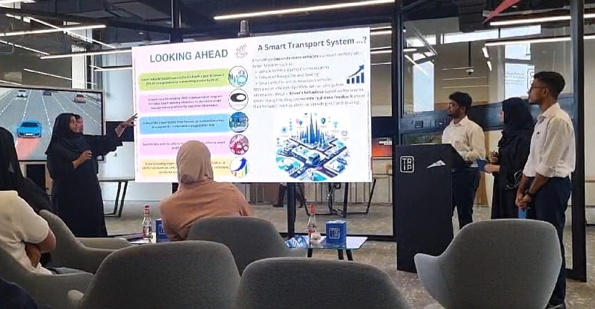

The Think Tank, hosted by RTA at Birmingham University, was a pivotal event where innovation thrived. Among 12
distinguished teams, our presentation of Enviromove stood out.
Enviromove isn't just a tech solution; it's a paradigm shift towards sustainable smart mobility,
rooted in citizen-centric principles.
Over a span of two intense weeks, our team meticulously crafted Enviromove. The judges' positive
feedback affirmed our dedication.
This is just the beginning; Enviromove holds immense potential for further development, and our team
is committed to realizing it.
Hajara Sabnam

Presenter in RTA Dubai's Think Tank Initiative

